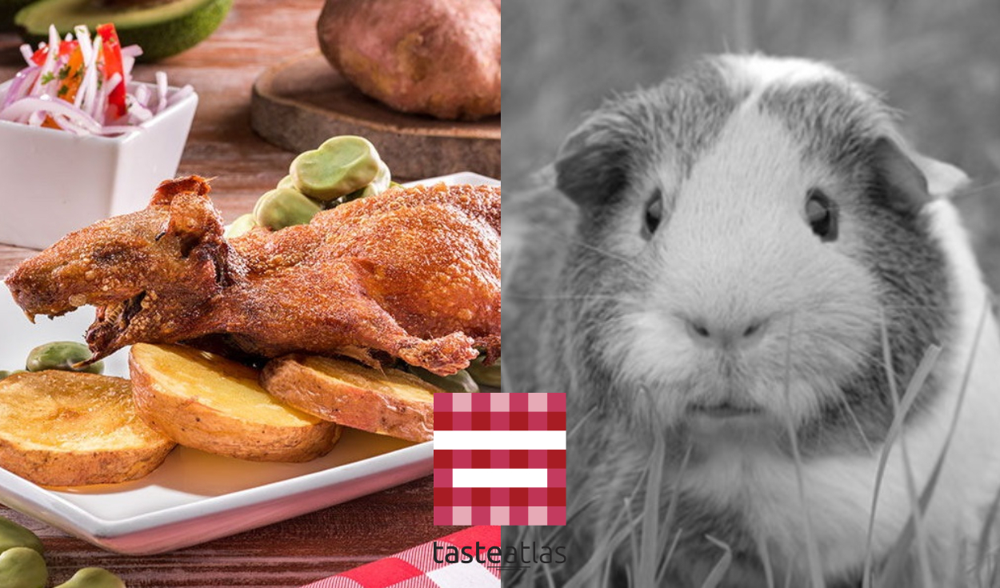

Especialidad
Cuy Chactado
Cuy entero frito bajo piedra, acompañado de papa, maíz y salsa de ají. Técnica ancestral que preserva su sabor.
Tiempo preparación: 1.5 horas
Nivel picante: Medio
Ingredientes:
- 1 cuy entero limpio
- 5 papas amarillas
- 2 cucharadas de ají panca
- 3 dientes de ajo
- Sal y comino al gusto
Preparación:
- Marinar el cuy con ajos molidos, sal y comino por 1 hora.
- Calentar piedra plana o sartén pesada.
- Colocar el cuy y presionar con otra piedra caliente.
- Cocinar por 45 minutos volteando ocasionalmente.